A tabela abaixo discrimina os custos estimados para 7 meses em Paris
Hi, let me share a little bit of my story!
A few things about me
Hello! I'm Diogo Pereira Lobo, a computer engineering student and full scholarship recipient at Insper. Originally from Fortaleza-CE, I'm passionate about technology and science, with experience in academic research and education.
Soon, I'll begin an exchange program at Junia, Grande école d'ingénierus in France, aiming to complement my technical education with skills in engineering, computing, and society. This exchange will be an opportunity to broaden my horizons and acquire the knowledge needed to become an excellent professional in the future.
As this is a bilateral exchange, the partner university's tuition costs are already covered. Additionally, I receive a cultural scholarship from Insper's scholarship program, which I'm part of. However, this amount isn't enough to cover all other necessary expenses for living abroad for a semester and experiencing the cultural immersion, which is a requirement of this scholarship. Therefore, this campaign aims to raise the necessary funds to cover additional expenses such as airfare, food, housing, and other related costs.
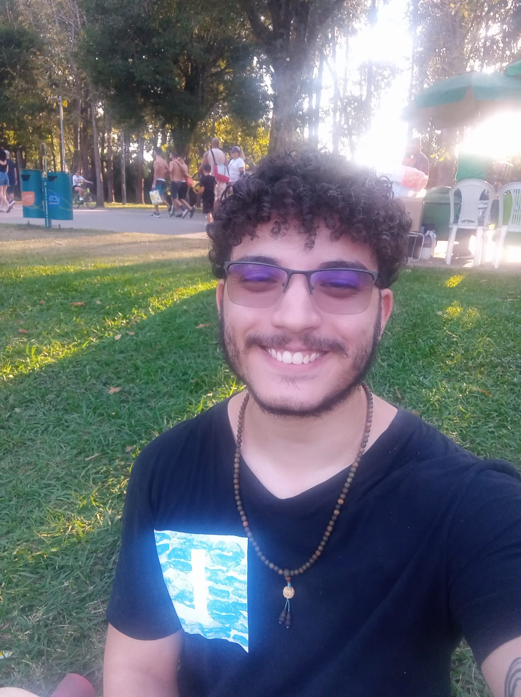
My Story
Childhood: I was born and raised in Fortaleza, Ceará, in Pirambu, the largest peripheral area in the state. Despite our financial difficulties, my parents always worked hard to ensure my two siblings and I had access to quality education. Since childhood, I've heard that only education could transform my path, and I carry this mantra with me to this day. My father always loved engineering and science; even though he never had the chance to attend university himself, he sparked in me the same passion for technology from an early age. I've always excelled academically. I completed elementary school at Raimundo Nonato Vieira, standing out especially in physics, chemistry, and mathematics. From this period, I still cherish friendships that inspire me today.
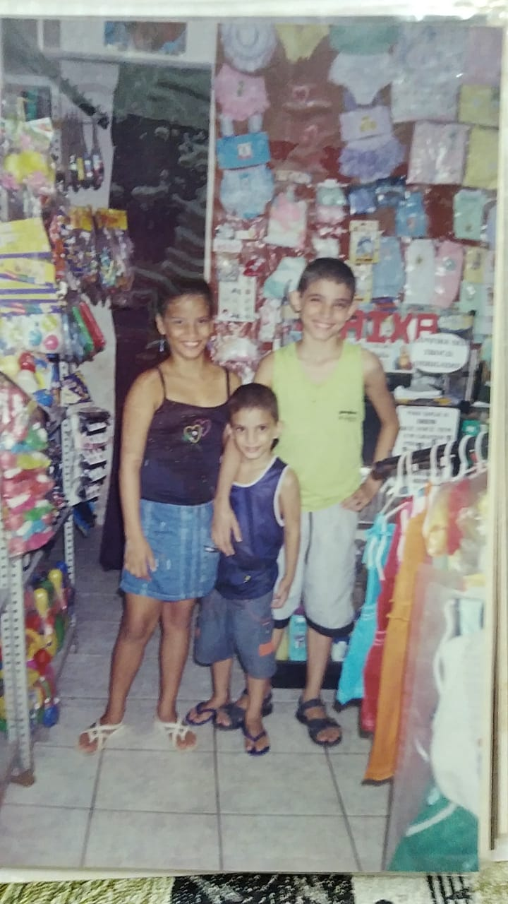
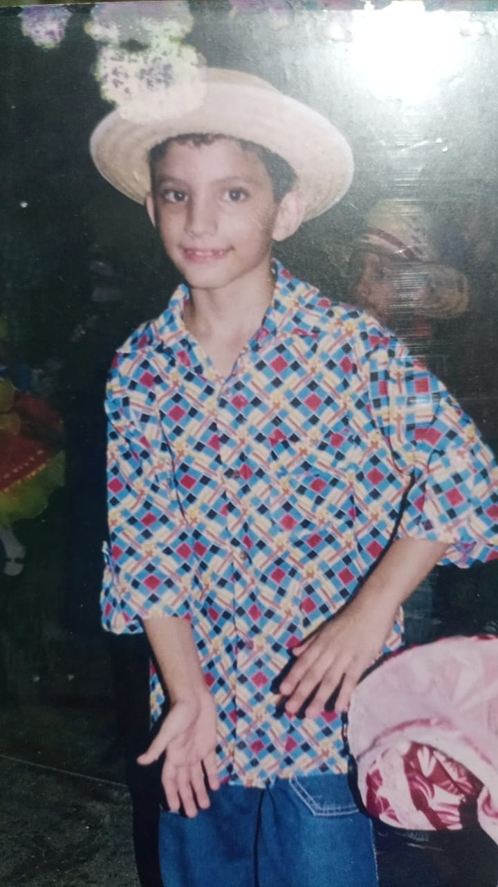
High School: In 2015, I started high school at the Instituto Federal do Ceará (IFCE), taking one year of technical studies in industrial mechanics. The following year, I earned a full scholarship at Ari de Sá Cavalcante, one of the most prestigious schools in the state, in an advanced study group focused on military entrance exams. Despite challenges like long daily commutes by public transportation and study sessions from 8:00 am to 8:45 pm, it was an enriching period that significantly enhanced my learning and resilience.
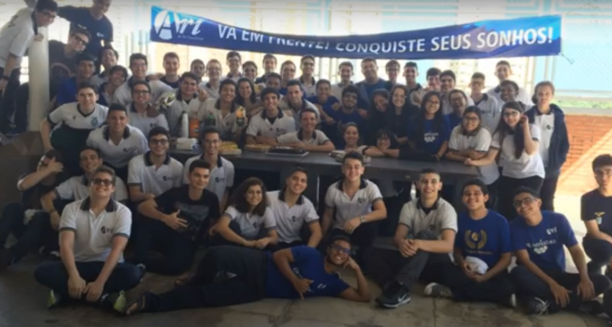
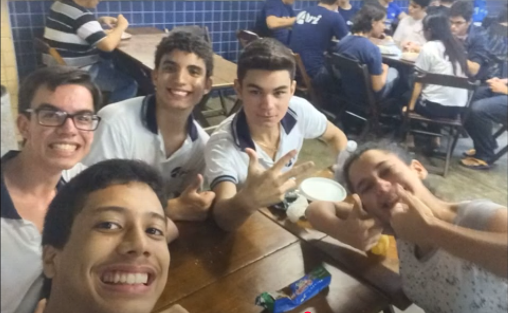
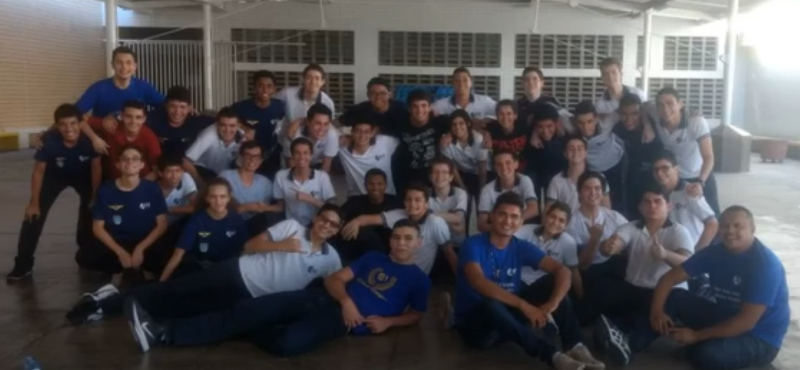
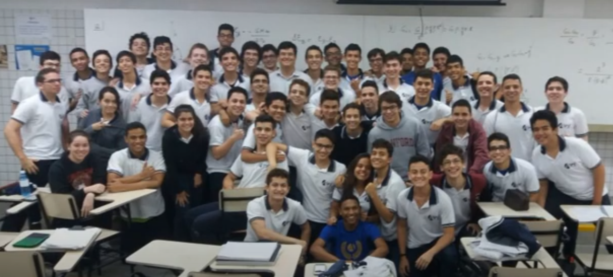
Journey at Insper: Being part of the Scholarship Program and studying at Insper has been a transformative experience. Even though I'm away from my family, I've found a welcoming environment filled with opportunities here. In my second semester, I had the chance to become a teaching assistant for the course Modeling and Simulation of the Physical World, which integrated concepts from physics, mathematics, and programming. This course was among the most enjoyable of my undergraduate studies and significantly sparked my interest in academia and the scientific use of programming. Also, during my second semester, I received an invitation to join Metricis, the Measurement Center for Social and Environmental Impact Investments, where I have been actively involved ever since. My role as a research assistant involved participating in various research projects, primarily focusing on data collection and organization. Additionally, I manage and update the OBC database on Pay-for-Success contracts, the most comprehensive resource worldwide in this area. Throughout my studies at Insper, I've also had opportunities to teach courses aimed at college entrance exams preparation and work with the NGO Pertencer, teaching mathematics to low-income students aspiring to attend Insper. The institution consistently inspires students to give back to society, and I aim to do this as soon as possible.
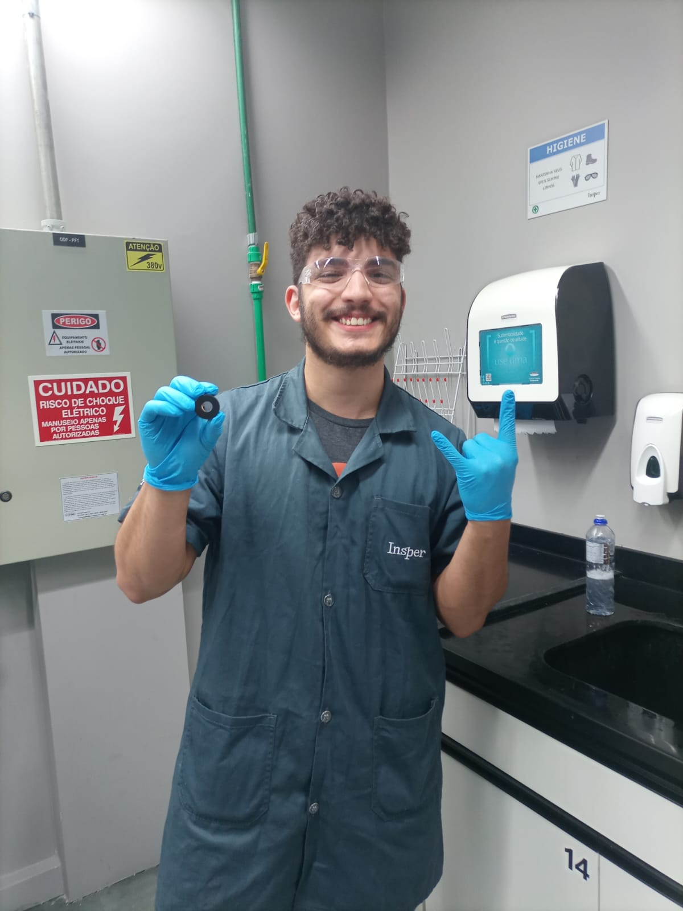
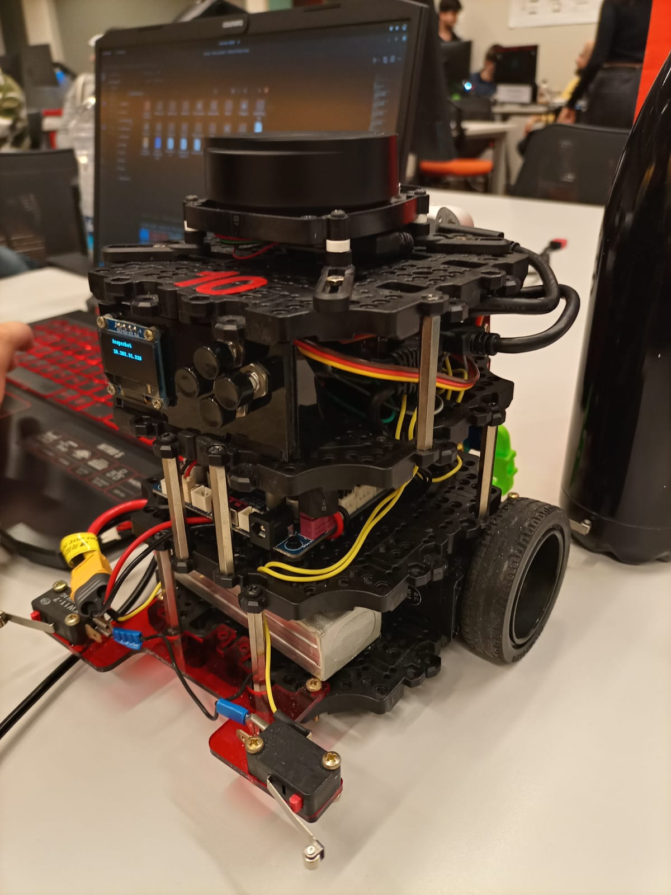
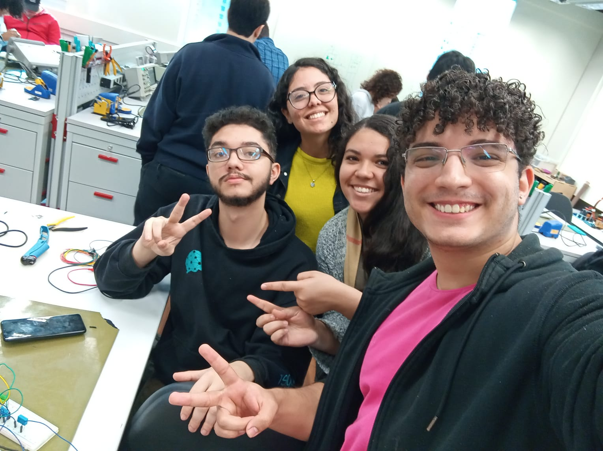
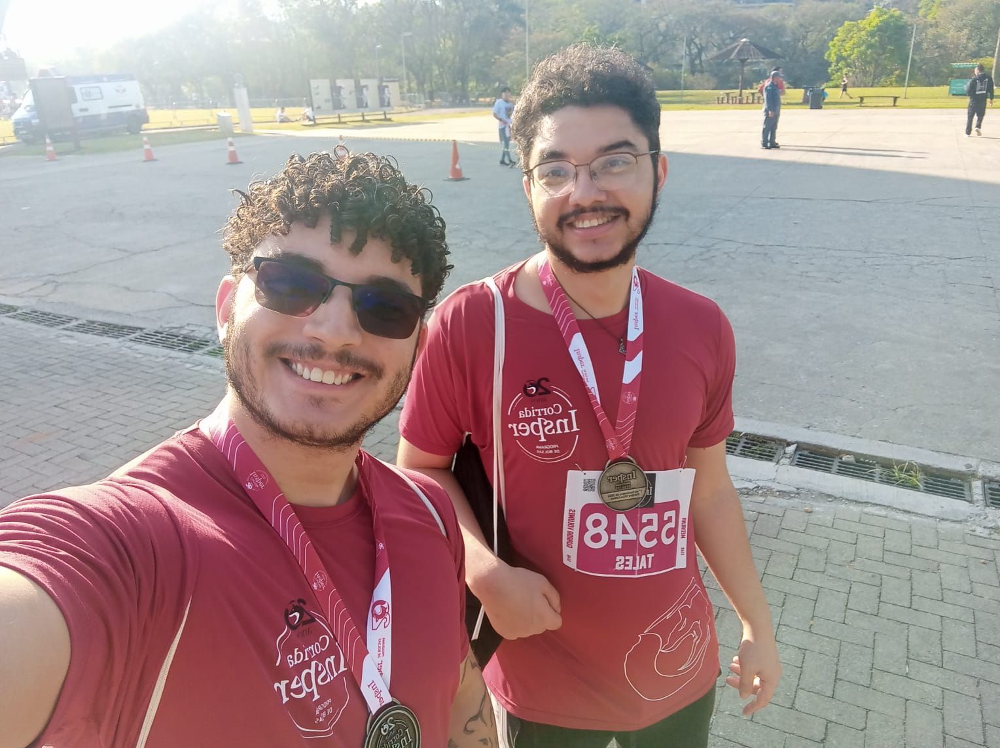
Exchange at JUNIA: Junia is a renowned engineering school located in Lille, France, recognized for academic excellence and its strong commitment to innovation and sustainability. It stands out for its practical teaching methodology focused on market needs and its robust international integration, offering students multicultural experiences and global partnerships. Its strategic location provides a rich environment for students' personal and professional development. Studying abroad has always been one of my greatest dreams, especially for the unique opportunity to expand my academic and personal horizons. Since childhood, my parents taught me that education is key to transforming realities, and I believe that studying at Junia will allow me to take a significant step forward in my education as a computer engineer. Additionally, this international experience will be essential for broadening my worldview, exposing me to new cultures, methodologies, and technologies. I see this exchange program as a valuable opportunity to consolidate my skills, acquire new knowledge, and eventually contribute not only to my career but also to the community I come from.
CUSTOS TOTAIS ESTIMADOS
| Descrição | Min (€) | Esperado (€) | Min (R$) | Esperado (R$) |
|---|---|---|---|---|
| Moradia | 550.00 | 630.00 | 3412.28 | 3908.61 |
| Alimentação | 300.00 | 350.00 | 1861.25 | 2171.45 |
| Transporte | 60.00 | 70.00 | 372.25 | 434.29 |
| Higiene, farmácia, etc. | 60.00 | 80.00 | 372.25 | 496.33 |
| Plano de celular | 35.00 | 35.00 | 217.15 | 217.15 |
| Total custos mensais | 1005 | 1165 | 6235.17 | 7227.83 |
| Total custos em 6 meses | 6030 | 6990 | 37411.02 | 43367.01 |
| Seguro saúde | --- | --- | 5211.48 | 5211.48 |
| Vistos | --- | --- | 917.07 | 917.07 |
| Passagens aéreas | 870.87 | 870.87 | 5403 | 5403 |
Thank you for considering donating! Updates to the donation progress are made manually as I receive contributions. Automating this process would require purchasing payment systems, which would increase the campaign costs. I appreciate your understanding! Obrigado por considerar doar! As atualizações no gráfico de doações são feitas manualmente à medida que recebo as contribuições. Automatizar esse processo exigiria a compra de sistemas de pagamento, o que aumentaria os custos da campanha. Agradeço pela compreensão!
Última atualização: 27/12/2024 às 20:07.
Meta da campanha: R$ 54899
Valor arrecadado: R$ 3800
Valor faltante: R$ 51099
Taxa Final (EUR/BRL + 1.1%IOF + 0.9%Câmbio): R$ 6.48
How to Donate Como Doar
PIX QRCODE PIX QRCODE
PIX Key Chave PIX
(85)987927107
Key copied! Chave copiada!
PIX Copy and Paste PIX Copia e Cola
Use the button below to copy the code Use o botão abaixo para copiar o código
Thank you for considering donating! Each contribution helps make this exchange program a reality and brings me closer to achieving my academic and professional goals. Obrigado por considerar doar! Cada contribuição ajuda a tornar este programa de intercâmbio uma realidade e me aproxima de alcançar meus objetivos acadêmicos e profissionais.
Entre em Contato
Sinta-se à vontade para entrar em contato pelo WhatsApp, e-mail, LinkedIn ou Instagram.
+55 85 998792-7107
Iniciar Chat no WhatsApp
diogopl1@al.insper.edu.br
Enviar Email
linkedin.com/in/diogo-pereira-lobo/
Ver Perfil no LinkedIn
instagram.com/di_spooky42/
@di_spooky42